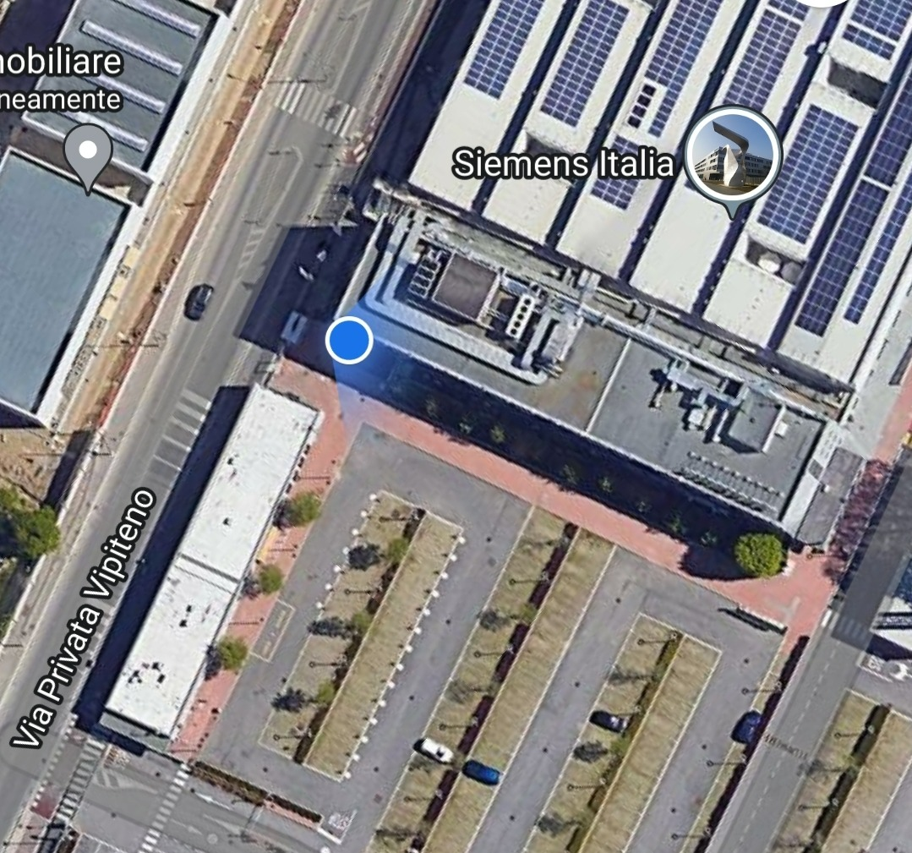

Siemens is a German multinational that stands out for its engineering excellence, innovation, quality, reliability and internationality for over 170 years. With a long history starting in 1899, Siemens in Italy is focused on industry, infrastructure and mobility. It has a capillary presence throughout the territory with its headquarters in Milan, branches and commercial offices distributed throughout the country. It has competence centers on electric mobility and smart grid solutions, industrial software, and intelligent building management as well as a Digital Enterprise EXperience Center.
In 1848, the company built the first long-distance telegraph line in Europe; 500 km from Berlin to Frankfurt am Main. In 1850, the founder’s younger brother, Carl Wilhelm Siemens later Sir William Siemens started to represent the company in London. The London agencybecame a branch office in 1858. In the 1850s, the company was involved in building long distance telegraph networks in Russia. In 1855, a company branch headed by another brother, Carl Heinrich von Siemens, opened in St Petersburg, Russia. In 1867, Siemens completed the monumental Indo-European (Calcutta to London) telegraph line.
During the final years of World War II, numerous plants and factories in Berlin and other major cities were destroyed by Allied air raids. To prevent further losses, manufacturing was therefore moved to alternative places and regions not affected by the air war. The goal was to secure continued production of important war-related and everyday goods. According to records, Siemens was operating almost 400 alternative or relocated manufacturing plants at the end of 1944 and in early 1945. In 1972, Siemens sued German satirist F.C. Delius for his satirical history of the company, Unsere Siemenswelt, and it was determined much of the book contained false claims although the trial itself publicized Siemens’ history in Nazi Germany. The company supplied electrical parts to concentration camps and death camps. The factories had poor working conditions, where malnutrition and death were common. Also, the scholarship has shown that the camp factories were created, run, and supplied by the SS, in conjunction with company officials, sometimes high-level officials.
45° 51' 13.5" N 9° 23' 89.4" E | Via Vipiteno 4, MI
Commissioned in July 2019, the "energy backbone" of Casa Siemens in Milan, with a total capacity of over 1 megawatt (MW), is concrete demonstration of the integration of various innovative technologies within a total area of 32,000 square meters which hosts about 1,800 people.
During my internship in Siemens I worked in the IT department, which was on the first floor of the Leonardo building, together with other functions such as P&O (hr), Logistics and Communication.